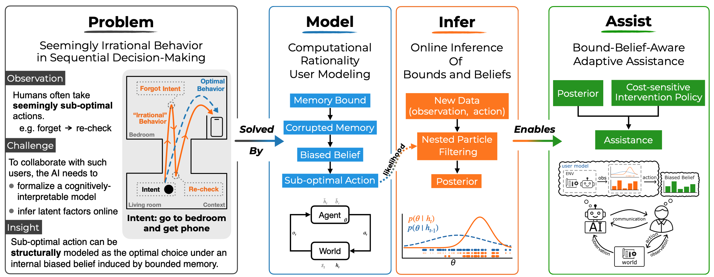

Despite the explosive growth of AI and the technologies built upon it, predicting and inferring the sub-optimal behavior of users or human collaborators remains a critical challenge. In many cases, such behaviors are not a result of irrationality, but rather a rational decision made given inherent cognitive bounds and biased beliefs about the world. In this paper, we formally introduce a class of computational-rational (CR) user models for cognitively-bounded agents acting optimally under biased beliefs. The key novelty lies in explicitly modeling how a bounded memory process leads to a dynamically inconsistent and biased belief state and, consequently, sub-optimal sequential decision-making.
We address the challenge of identifying the latent user-specific bound and inferring biased belief states from passive observations on the fly. We argue that for our formalized CR model family with an explicit and parameterized cognitive process, this challenge is tractable. To support our claim, we propose an efficient online inference method based on nested particle filtering that simultaneously tracks the user's latent belief state and estimates the unknown cognitive bound from a stream of observed actions.
We validate our approach in a representative navigation task using memory decay as an example of a cognitive bound. With simulations, we show that (1) our CR model generates intuitively plausible behaviors corresponding to different levels of memory capacity, and (2) our inference method accurately and efficiently recovers the ground-truth cognitive bounds from limited observations (≤100 steps). We further demonstrate how this approach provides a principled foundation for developing adaptive AI assistants, enabling adaptive assistance that accounts for the user's memory limitations.
Watch our video presentation:
Watch Video
@inproceedings{zhu2026more,
title={More Than Irrational: Modeling Belief-Biased Agents},
author={Zhu, Yifan and Katt, Sammie and Kaski, Samuel},
booktitle={AAAI Conference on Artificial Intelligence},
year={2026},
organization={Association for the Advancement of Artificial Intelligence}
}